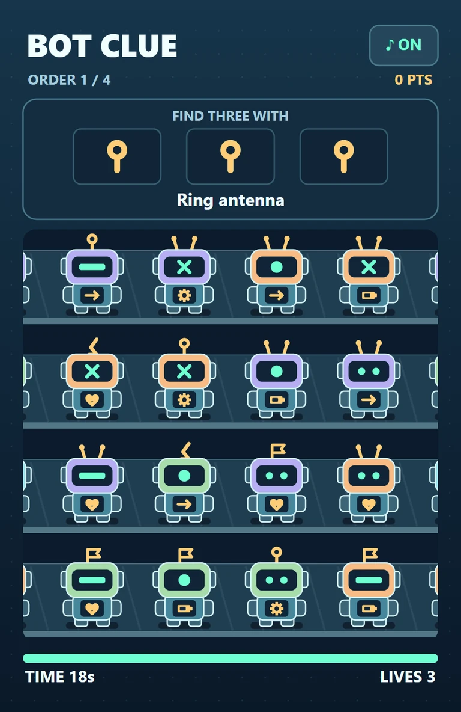

Turn the clue into a yes-or-no check
If the clue is “Ring antenna,” ask one question of each robot: does the part on top of its head form a closed loop? Look at that part first. A pair of round eyes can catch your attention, but the eyes do not answer the question.
This also works in a spot-the-character puzzle with still images. If a clue calls for a striped hat, start with the hats and pass over anyone wearing a solid one. Leave other details for clues that require them.
Scan one row at a time
In Bot Clue, rows move in alternating directions. Scan each belt before shifting your eyes to the next one. If a robot is partly off the edge and you cannot see its antenna, check the visible candidates while it comes into view. A wrong tap costs a life, so check the outline once more before committing.
Use the three spaces next to the clue to see how many matches you still need. Once you tap a correct robot, it leaves the belt. Moving on to the remaining targets is easier if you keep your eyes on the same part of each robot.
Worked example: find three ring antennas
In one opening board generated by Bot Clue, the order was Ring antenna. Ignore the partially visible robots at the edges and look at the fully visible ones.

Check these three candidates against the clue:
- Top belt, first fully visible robot from the left: a ring antenna, a wide visor and an arrow panel.
- Second belt, second fully visible robot from the left: a ring antenna, a cross visor and a gear panel.
- Bottom belt, third fully visible robot from the left: a ring antenna, two eyes and a gear panel.
All three qualify. The different faces and chest panels are allowed because the order specifies only the antenna. The leftmost fully visible robot on the second belt also has a cross visor, but its antenna is shaped like a bolt. Skip it. Selecting the three ring-antenna robots completes the order. The opening clue and the robot lineup can change between runs.
Check every feature when the clue shows a whole robot
Some Bot Clue Posts have a mixed finale with three different robot blueprints. Pick one blueprint and check its antenna, visor and chest panel on the same candidate. For example, if a blueprint shows a ring antenna, a wide visor and an arrow panel, a robot with that antenna and visor but a gear panel is a near match. Keep looking for the arrow.
Try a mixed finale in Bot Clue: First Shift. The same check applies to a two-trait clue in Crowd Clue. If the clue asks for a beret and a bow tie, both must appear on the same person. Start with whichever feature you can pick out fastest and use the second to confirm.